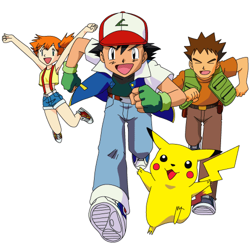

¿Qué es el Anime de Pokémon?
¿Qué es el Anime de Pokémon?
Pokémon
(ポケットモンスター Pocket Monsters en japonés) es un anime basado en su mayoría
en los videojuegos de la franquicia Pokémon. Fue creado en Japón por
Satoshi Tajiri, Junichi Masuda y Ken Sugimori, siendo producida por los
estudios OLM Incorporated y licenciada por The Pokémon Company desde 2006. El anime comenzó su recorrido por la
televisión japonesa en TV Tokyo desde 1997 y todavía hoy sigue en
emisión, contando con más de 1000 episodios. Se habló del anime por
primera vez en 1997, cuando se les pidió a Satoshi y al resto de los
creadores de la franquicia en Game Freak una licencia para sacar una
serie animada de Pokémon. Satoshi lo permitió, pero forzó a los
guionistas y animadores a jugar hasta el final a las primeras ediciones
de la Game Boy, para que pudieran apreciar de qué se trataba Pokémon
realmente. Después de esto, el estudio hizo una historia basada en
cosas que suceden en el juego. Este estudio es OLM Incorporated
(Oriental Light and Magic), quienes se han encargado del anime en su
totalidad. Adicionalmente, desde 1998 se estrena en verano todos los
años una película basada en el anime. La trama de las películas guarda
relación con la serie, pero no como si se trata de un episodio más, por
lo que son independientes. Hasta la fecha se han producido 22 películas.
El doblaje de la serie es distinto en
Hispanoamérica y España, al igual que la distribución, motivo por el
que los episodios a veces se estrenan antes en un lugar o en otro. Las
diferentes traducciones originan, en ocasiones, que un personaje, un
lugar, un objeto, etc., sea conocido con dos nombres en español. En
Hispanoamérica, donde los videojuegos se distribuyen en inglés, el
anime suele recurrir a ellos, mientras que en España se utilizan los
nombres traducidos de los videojuegos. Así, por ejemplo, el personaje
que en España se conoce como Aura, en Hispanoamérica se llama May (en
inglés). No obstante, existen excepciones, como Equipo Rocket (en
Hispanoamérica) y Team Rocket (en España).
El anime relata las aventuras de Ash
Ketchum, un entrenador Pokémon que junto con su Pokémon inicial
Pikachu, obtenido de manos del profesor Oak en Pueblo Paleta, recorre
las regiones con el objetivo de reunir las medallas de gimnasio
necesarias para participar en una Liga Pokémon y ganarla, y así estar
un paso más cerca de convertirse en un maestro Pokémon. Actualmente se
encuentra en Galar. Aparte también hay antagonistas como el Equipo/Team
Rocket, quienes siempre van en busca de atrapar al Pikachu de Ash para
llevárselo a su jefe.
Temporadas
| Temporadas |
|
| El Comienzo |
|
| Oro y Plata |
|
| Rubí y Zafiro |
|
| Diamante y Perla |
|
| Negro y Blanco |
|
| XY |
|
| Sol y Luna |
|
| Viajes Pokémon |
Otros medios en los que ha incursionado la franquicia
Hipervinculos